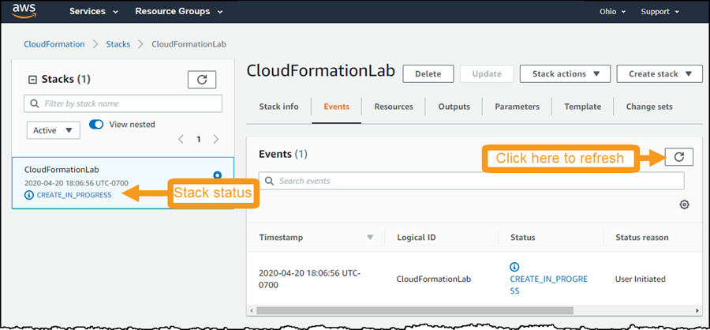
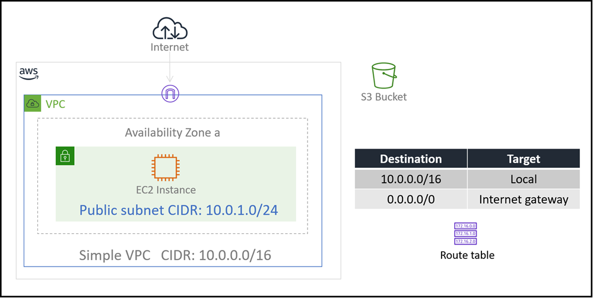

Level 200: Deploy and Update CloudFormation
AWS Well-Architected
This lab illustrates best practices for reliability as described in the AWS Well-Architected Reliability pillar.
How do you implement change? * Best practice: Deploy changes with automation: Deployments and patching are automated to eliminate negative impact. * Design principle: Manage change in automation: Changes to your infrastructure should be made using automation. The changes that need to be managed include changes to the automation, which then can be tracked and reviewed.
When this lab is completed, you will have deployed and edited a CloudFormation template. Using this template you will deploy a VPC, an S3 bucket and an EC2 instance running a simple web server.
Table of Contents
- Deploy a CloudFormation Stack
- Configure Deployed Resources using Parameters
- Add an Amazon S3 Bucket to the Stack
- Add an Amazon EC2 Instance to the Stack
- Tear down this lab
1. Deploy a CloudFormation Stack
1.1 The CloudFormation template
You will begin by deploying a CloudFormation stack that creates a simple VPC as shown in this diagram:

- Download the simple_stack.yaml CloudFormation template
- Open this file in a Text Editor
- Preferably use an editor that is YAML aware like vi/vim, VS Code, or Notepad++
- Do NOT use a Word Processor
The template is written in a format called YAML, which is commonly used for configuration files. The format of the file is important, especially indents and hyphens. CloudFormation templates can also be written in JSON.
Look through the file. You will notice several sections:
-
The Parameters section is used to prompt for inputs that can be used elsewhere in the template. The template is asking for several inputs, but also provides default values for each one. Look through these and start to reason about what each one is.
-
The Conditions section is where you can setup if/then-like control of what happens during template deployment. It defines the circumstances under which entities are created or configured.
-
The Resources section is the "heart" of the template. It is where you define the infrastructure to be deployed. Look at the first resource defined.
- It is the VPC (Amazon Virtual Private Cloud)
- It has a logical ID which in this case is
SimpleVPC. This logical ID is how we refer to the VPC resource within the CloudFormation template. - It has a
Typewhich tells CloudFormation which type of resource to create - And it has
Propertiesthat define the values used to create the VPC
-
The Outputs section is used to display selective information about resources in the stack.
-
The Metadata section here is used to group and order how the CloudFormation parameters are displayed when you deploy the template using the AWS Console
| CloudFormation tip |
|---|
| When editing CloudFormation templates written in YAML, be extra cautious that you maintain the correct number of spaces for each indentation |
| Indents are always in increments of two spaces |
You will now use this template to launch a CloudFormation stack that will deploy AWS resources in your AWS account.
1.2 Deploying an AWS CloudFormation stack to create a simple VPC
-
Go to the AWS CloudFormation console at https://console.aws.amazon.com/cloudformation and click Create Stack > With new resources

-
Leave Prepare template setting as-is
- 1 - For Template source select Upload a template file
- 2 - Click Choose file and supply the CloudFormation template you downloaded:
simple_stack.yaml
-
Click Next
- For Stack name use
CloudFormationLab - Parameters
- Look over the Parameters and their values. We will work with these later in the lab.
- Leave all Parameters with their default values and click Next
- For Configure stack options click Next
- For Review CloudFormationLab
- Review the contents of the page
- At the bottom of the page, select I acknowledge that AWS CloudFormation might create IAM resources with custom names
- Click Create stack

-
This will take you to the CloudFormation stack status page, showing the stack creation in progress.
- Click on the Events tab
- Scroll through the listing. It shows (in reverse order) the activities performed by CloudFormation, such as starting to create a resource and then completing the resource creation.
- Any errors encountered during the creation of the stack will be listed in this tab.

- Deployment will take approximately 30 seconds to deploy. When it shows status CREATE_COMPLETE, then you are finished with this step.
-
Click the Resources tab. The listing shows all the resources that were created.
1.3 Understanding the deployment
- How many resources were created?
- Look at the
simple_stack.yamltemplate (in your text editor). How many resources are defined there? - Investigate:
- Why did the deployment not create all of the resources?
- After the horizontal rule below, this will be explained. Try to figure this out before continuing.
- The Condition
PublicEnabledis set using the ParameterPublicEnabledParam - Similarly the Condition
EC2SecurityEnabledis set using the ParameterEC2SecurityEnabledParam - The Default value for both of these Parameters is
false - And therefore both conditions
PublicEnabledandEC2SecurityEnabledevaluate tofalse - Look in the template at how the
PublicEnabledandEC2SecurityEnabledConditions are used - The
Condition: <Condition_Name>statement on a resource means- If this condition is
true- then create this resource
- else
- do not create this resource
- If this condition is
- All resources except the VPC have a
Conditionstatement. Since the conditions werefalseonly the VPC was created
- Return to the AWS CloudFormation console
- Click the Resources tab for the CloudFormationLab stack. The listing shows all the resources that were created. In this case just the VPC
- Note the Logical ID for the VPC is SimpleVPC. Look at the CloudFormation template file and determine where this name came from
- Under the Resources tab click on the Physical ID link for SimpleVPC
- This takes you to the VPC console where you can see the VPC you created
- Select the checkbox next to your VPC (if not already selected)
- Look at the VPC attributes under the Description tab. How do these compare to the CloudFormation template?
2. Configure Deployed Resources using Parameters
In this task, you will gain experience changing CloudFormation stack parameters and updating your CloudFormation stack
- Your objective is to deploy additional resources used by the VPC to enable connection to the internet
2.1 Update Parameters
- Go to the AWS CloudFormation console (if not already there)
- Click on Stacks
- Click on the CloudFormationLab stack
- Click Update
- Leave Use current template selected. You have not yet changed the template
- Click Next
- On the Specify stack details screen you now have the opportunity to change the Parameters
- Change PublicEnabledParam to
true
- Change PublicEnabledParam to
- Click Next
- Click Next again, until you arrive at the Review CloudFormationLab screen
- Scroll down to Change set preview and note several resources are being added
- At the bottom of the page, select I acknowledge that AWS CloudFormation might create IAM resources with custom names
- Click Create stack
- When stack status is CREATE_COMPLETE for your update (about one minute) then continue
2.2 Understanding the deployment
- You did not change any contents of the the CloudFormation Template
-
Changing only one parameter, you re-deployed the stack which resulted in additional resources deployed
-
Go to the AWS CloudFormation console (if not already there)
- Click the Resources tab for the CloudFormationLab stack.
- The listing now shows the VPC as before, plus additional resources required to enable us to deploy resources into the VPC that have access to the internet
- Click through on several of the Physical ID links and explore these resources
The current deployment is now represented by this architecture diagram:

3. Add an Amazon S3 Bucket to the Stack
In this task, you will gain experience in editing a CloudFormation template and updating your CloudFormation stack
- Your objective is to deploy a new Amazon S3 bucket
3.1 Edit the CloudFormation template file
- From the Amazon S3 Template Snippets documentation page, copy the YAML example for Creating an Amazon S3 Bucket with Defaults
- Edit the
simple_stack.yamlfile you downloaded earlier to include an Amazon S3 bucket- Under the Resources section add the snippet you copied
- You do not require any Properties for this new S3 bucket resource
- Indents are important in YAML -- use two spaces for each indent. Look at the other resources for guidance
- The correct solution only needs two lines -- one for the Logical ID and one for the Type
- Save the template
Once you have edited the template, continue with the following steps to update the stack.
3.2 Update the CloudFormation stack - specify updated template
- Go to the AWS CloudFormation console
- Click on Stacks
- Click on the CloudFormationLab stack
- Click Update
- Now click Replace current template selected. This is different from what you did for the last update.
- Click Upload a template file
- Click Choose file
- Select
simple_stack,yaml, your edited CloudFormation template file
- Select
-
Click Next
-
At this point you may see an error where you remain on the Update stack screen and a red banner across the top of the page displays an error message
- If you see Template format error then:
- Check the indentation and punctuation in your
simple_stack,yamlfile - Once you have corrected the error, click Choose file again to reload you new corrected file
- Check the indentation and punctuation in your
If you did not see an error you may proceed
3.3 Update the CloudFormation stack - complete the deployment
- On the Specify stack details click Next
- Click Next again, until you arrive at the Review CloudFormationLab screen
- Scroll down to Change set preview and note your S3 bucket is the only resource being added
- At the bottom of the page, select I acknowledge that AWS CloudFormation might create IAM resources with custom names
- Click Create stack
- When stack status is CREATE_COMPLETE for your update (about one minute) then continue
- Click the Resources tab
- Note your new S3 bucket is listed among the resources deployed
- Click on the Physical ID of the S3 bucket to view the bucket on the S3 console
- Note the name is
cloudformationlab-mys3bucket-<some_random_string>.
The name for the S3 bucket was auto-generated by CloudFormation based on your CloudFormation stack name (converted to lowercase), plus the string "mys3bucket", plus a randomly generated string.
- The name for an S3 bucket must be unique across all S3 buckets in AWS
- Your bucket was assigned an auto-generated name because you did not specify a name in the S3 bucket properties in your CloudFormation template
- In the next exercise you will add a bucket name property for your S3 bucket and update the deployment
3.4 Assign name property for the S3 bucket
For this task you are going to add a Parameter where you can specify the bucket name, and a property on the S3 bucket resource that uses this parameter.
-
Under the Parameters section of your
simple_stack.yamltemplate look at the S3BucketName parameter-
It is not currently used in the template
# S3 Bucket S3BucketName: Type: String Description: The name for the S3 bucket - must be unique across all of AWS (3-63 lowercase letters or numbers) Default: replaceme AllowedPattern: '^[a-z0-9]{5,40}$' ConstraintDescription: 3-63 characters; must contain only lowercase letters or numbers -
It is a string for which we have configured certain constraints
- The AllowedPattern is a regular expression specifying only lowercase letters or numbers and a string length between 3-63 characters
- This satisfies the constraints on what is allowed in an S3 bucket name
- It is actually more constrictive than what is allowed. See Rules for Bucket Naming under Bucket Restrictions and Limitations for more details.
-
-
Add two more lines to your S3 bucket under in the Resources section of your template so it looks like this
-
Be caution to maintin the two-space indents where indicated
MyS3Bucket: Type: AWS::S3::Bucket Properties: BucketName: !Ref S3BucketName -
The Properties label defines that the items that follow (indented underneath) are properties of the S3 bucket
- For the BucketName property you are specifying a reference to another value in the template. Specifically you are indicating that the string entered as the S3BucketName parameter should be used as the name of the bucket
-
-
Go to the AWS CloudFormation console
- Click on Stacks
- Click on the CloudFormationLab stack
- Click Update
- Now click Replace current template selected. This is different from what you did for the last update.
- Click Upload a template file
-
Click Choose file
- Select
simple_stack,yaml, your edited CloudFormation template file
- Select
-
Click Next -- Look for any errors reported
-
On the Specify stack details look at the Parameters
- You must enter a value for S3BucketName (you must replace the deafult value)
- Remember it must be a name that no other bucket in all of AWS is already using
-
Click Next again, until you arrive at the Review CloudFormationLab screen
- Scroll down to Change set preview and note your S3 bucket will be modified
- Note where it says Replacement is True. This means it will actually delete the current bucket and replace it with a new one with the newly specified name
- At the bottom of the page, select I acknowledge that AWS CloudFormation might create IAM resources with custom names
- Click Create stack
-
When stack status is CREATE_COMPLETE for your update (about one minute) then continue
-
Under the resources see your newly named S3 bucket
Troubleshooting
- If when trying to upload your new template you see Invalid template resource property
- Check that the properties you specified for the resource you added match the properties in the documentation.
- Once you have corrected the error, click Choose file again to reload you new corrected file
- If your CloudFormation stack fails, then click on the Events tab and scroll down to find the source of the error
- If you see a message like
<your_chosen_bucket_name> already existsthen re-do the CloudFormation update steps, but specify a more unique bucket name
- If you see a message like
4. Add an Amazon EC2 Instance to the Stack
In this task, your objective is to add an Amazon EC2 instance to the template, then update the stack with the revised template.
Whereas the bucket definition was rather simple (just two to four lines), defining an Amazon EC2 instance is more complex because it needs to use associated resources, such as an AMI, security group and subnet.
For this exercise we wil assume you now know how to edit your CloudFormation template and update your CloudFormation stack with the updated template
4.1 Get the latest AMI to use for your EC2 instance
In the Parameters section of your template, look at the LatestAmiId parameter.
LatestAmiId:
Description: Gets the latest AMI from Systems Manager Parameter store
Type: 'AWS::SSM::Parameter::Value<AWS::EC2::Image::Id>'
Default: '/aws/service/ami-amazon-linux-latest/amzn2-ami-hvm-x86_64-gp2'
This is a special parameter. This parameter uses the AWS Systems Manager Parameter Store to retrieve the latest AMI (specified in the Default parameter, which in this case is Amazon Linux 2) for the stack's region. This makes it easy to deploy stacks in different regions without having to manually specify an AMI ID for every region.
- Go to the AWS CloudFormation console
- Click on Stacks
- Click on the CloudFormationLab stack
- Click on the Parameters tab
- Look at the Value and Resolved value for LatestAmiId
- You see here how it resolves to an AMI ID
For more details of this method, see: AWS Compute Blog: Query for the latest Amazon Linux AMI IDs using AWS Systems Manager Parameter Store
4.2 Add the EC2 instance resource to your CloudFormation template and deploy it
-
Edit the CloudFormation Template, adding a new resource for an EC2 instance
Use this documentation page for assistance: AWS::EC2::Instance
- Use the YAML format
- For Logical ID (the line above Type) use
MyEC2Instance
You only need to specify these six properties:
- IamInstanceProfile: Refer to
Web1InstanceInstanceProfile, which is defined elsewhere in the template - ImageId: Refer to
LatestAmiId, which is the parameter discussed previously - InstanceType: Refer to
InstanceType, another parameter - SecurityGroupIds: Refer to
PublicSecurityGroup, which is defined elsewhere in the template - SubnetId: Refer to
PublicSubnet1, which is defined elsewhere in the template - Tags: Use this YAML block:
Tags: - Key: Name Value: Simple Server
Remember
- When referring to other resources in the same template, use
!Ref. See theBucketNameexample you already implemented - When referring to SecurityGroupIds, the template is actually expecting a list of security groups. You therefore need to list the security group like this:
SecurityGroupIds: - !Ref PublicSecurityGroup
To download a sample solution, right-click and download this link: simple_stack_plus_s3_ec2.yaml
-
Once you have edited the template, update the stack deployment with your revised template file.
-
On the Parameters screen of the CloudFormation update switch EC2SecurityEnabledParam to
trueImportant Change EC2SecurityEnabledParam to trueThis will tell the template to create resources your EC2 instance will need such as the Security Group and IAM Role -
This deployment of the CloudFormation stack will take about three minutes
- The instance will now be displayed in the Resources tab.
-
-
Go to the EC2 console to see the Simple Server that was created. Explore the properties of this EC2 instance.
The final deployment is now represented by this architecture diagram:

4.3 [Optional bonus task] Add a web server to the EC2 instance
In this task you will update your CloudFormation template to modify the deployed EC2 instance so that it runs a simple web server
-
Modify the EC2 resource in the template
- Delete the following properties form the EC2 resource
SecurityGroupIdsSubnetId
-
Add the following properties using the YAML below
NetworkInterfaces: adds an external IP address (and DNS name) for the EC2 instanceUserData: a simple bash script to install and run an Apache web server. This runs on EC2 instance creation only.
-
Visually the diff for this looks like:

-
The final EC2 instance resource should look like this:
MyEC2Instance: MyEC2Instance: Type: AWS::EC2::Instance Properties: IamInstanceProfile: !Ref Web1InstanceInstanceProfile ImageId: !Ref LatestAmiId InstanceType: !Ref InstanceType Tags: - Key: Name Value: Simple Server NetworkInterfaces: - AssociatePublicIpAddress: "true" DeviceIndex: "0" GroupSet: - Ref: PublicSecurityGroup SubnetId: Ref: PublicSubnet1 UserData: Fn::Base64: | #!/bin/bash yum -y update sudo yum install -y httpd sudo systemctl start httpd
- Delete the following properties form the EC2 resource
-
Add an output value so you can easily find the public DNS of the EC2 instance
-
Insert the following YAML under the Outputs section of your CloudFormation template
PublicServerDNS: Value: !GetAtt MyEC2Instance.PublicDnsName -
Use the other entry under Outputs to ensure your new entry has the right indentation
- The
!GetAttfunction can return various attributes of the resource. In this case the public DNS name of the EC2 instance. - NOTE: if you used a Logical ID other than
MyEC2Instancewhen you added your EC2 resource, then you should use that name here - To download a sample solution, right-click and download this link: simple_stack_plus_s3_ec2.yaml
-
-
Update the CloudFormation stack using the modified template
- After deployment is complete, click on the Outputs tab for the CloudFormation stack
- Click on the public DNS name

You should see the Apache HTTP server Test Page, indicating your EC2 instance is running the web server and is accessible from the Internet.
5. Tear down this lab
When a CloudFormation stack is deleted, CloudFormation will automatically delete the resources that it created.
You will now delete the stack.
-
In the CloudFormation console, select CloudFormationLab.
-
Click Delete then click Delete stack
The stack will show DELETE_IN_PROGRESS. After a few minutes, the stack will disappear.
References & useful resources
License
Documentation License
Licensed under the Creative Commons Share Alike 4.0 license.
Code License
Licensed under the Apache 2.0 and MITnoAttr License.
Copyright 2020 Amazon.com, Inc. or its affiliates. All Rights Reserved.
Licensed under the Apache License, Version 2.0 (the "License"). You may not use this file except in compliance with the License. A copy of the License is located at
https://aws.amazon.com/apache2.0/
or in the "license" file accompanying this file. This file is distributed on an "AS IS" BASIS, WITHOUT WARRANTIES OR CONDITIONS OF ANY KIND, either express or implied. See the License for the specific language governing permissions and limitations under the License.